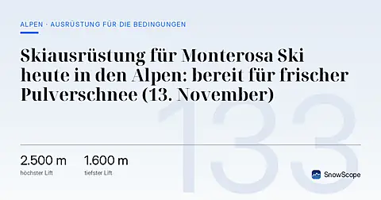
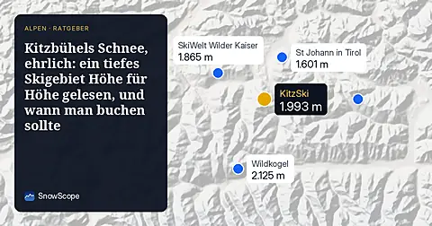
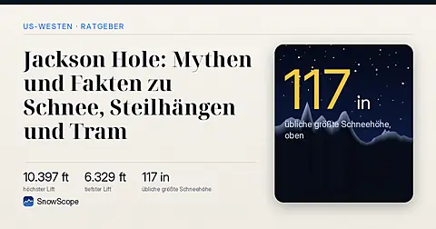
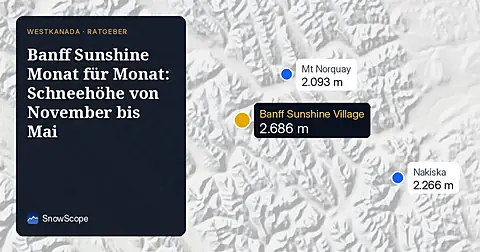

Schneeberichte · Ski-Tipps
Tägliche Schneeberichte für Skifahrer: wo der Schnee liegt, was kommt und wo du fahren kannst, aus der SnowScope-Schneekarte und Messstationen. Jede Zahl stammt aus den Daten des Tages.


Der Gipfelfinder von SnowScope ist eine kostenlose Gipfel-App: Richte dein Handy auf die Berge und die App nennt dir die Gipfel, mit Höhe, Entfernung und Gehzeit. Unsere Tests: 98 % der angezeigten Gipfel sind wirklich in Sicht, und auf echten Fotos korrigierte sie Kompassfehler von bis zu 105° auf 0,15°. Kostenlos mit 3 Namen, alle Gipfel einmalig für 0,99 €.

Was du anziehst, was du einpackst und wann du fährst, Skigebiet für Skigebiet. …

Ein Sturm am 4. November brachte 8 bis 13 inches Neuschnee an fünf hoch gelegenen Stationen in Colorado nahe Aspen. Fünf Tage später war die Hälfte weg. Was das für Powder-Tage bedeutet.

Eine Neigungskarte von Les Grands Montets und sieben weiteren Skigebieten zeigt, wie viel Gelände steiler als 30°, 35° und 40° ist – und warum diese Grenze für Lawinen zählt.

Whistler Blackcomb bekam in einer Woche 75 cm Neuschnee am Gipfel, dann einen warmen Sturm mit 124 mm Wasser. Ein einfacher Leitfaden zu Unterlage, Neuschnee, Regen und Harschdeckel.

Vail in Zahlen: übliches Maximum von etwa 64 in (162 cm) an der Mittelstation in 46 vergangenen Wintern, März am schneereichsten, dazu Gelände, Anreise, Sicherheit.

Zermatt in Zahlen: wo der Schnee hält, die sichersten Monate und die Anreise ins autofreie Dorf, aus 46 vergangenen Wintern.

Steamboat, Colorado, für Familien: was für Kleinkinder, Schulkinder, Teenager und Eltern passt, mit dem Schnee aus 46 vergangenen Wintern auf drei Höhen.

Ist Verbier etwas für Anfänger? Wann ist der Schnee am besten? Wie kommt man hin? Antworten zu den 4 Vallées und 46 vergangenen Wintern.

Wie du den ersten Tag in Park City Mountain, Utah, verbringst und wann du fährst: Unsere Schneehistorie gibt etwa 71 in (180 cm) als übliches Maximum an der Mittelstation in 46 vergangenen Wintern.

Die Sellaronda ab Wolkenstein (Sëlva) in Gröden: Grödner Joch, Campolongo, Pordoi und Sellajoch der Reihe nach, mit unserer Schneehistorie von 46 vergangenen Wintern.

Mt Baker, Washington: etwa 133 in (337 cm) übliches Maximum an der Mittelstation in 46 vergangenen Wintern, ein Schneefall-Weltrekord, keine Unterkunft am Berg.

Val d'Isère und der Espace Killy für Anfänger, Fortgeschrittene und Könner, mit dem Schnee aus 46 Wintern auf drei Höhen.

Mammoth Mountain nach Saison planen: etwa 93 in (235 cm) übliches Maximum an der Mittelstation in 46 vergangenen Wintern, März am tiefsten, lange Frühjahre, schwankende Winter.

Kitzbühel ist berühmt und tief gelegen. Was 46 vergangene Winter über den Schnee auf 762 m, 1.377 m und 1.993 m sagen, was sich geändert hat und welche Wochen die sicherere Wahl sind.

Jackson Hole hält Schnee bis tief in den Frühling auf seinen hohen Gipfeln. Wir haben sechs verbreitete Aussagen gegen 46 Winter Schneegeschichte überprüft. Daten von November 2026.

Zehn praktische Punkte für eine Skireise nach Livigno: Anreise, Kälte, zollfreie Geschäfte, die zwei Talseiten und die beste Schneezeit, aus 46 vergangenen Wintern unserer Schneehistorie.

Whitewater liegt in einer durchgehend verschneiten Mulde der Selkirks in der Nähe von Nelson. In der Mittelhöhe erreichen typische Gipfel 165 cm. So verläuft ein Sturmtag auf einem Skiberg mit 670 m Höhenunterschied.

Les Arcs hat vier Dörfer in verschiedenen Höhen, jedes mit eigener Schneelage und Charakter. Wähle das Richtige für deinen Winter.

Whistler Blackcomb für jedes Können, mit unserer Schneehistorie: etwa 370 cm übliches Maximum an der Mittelstation in 46 vergangenen Wintern, März und April am tiefsten.

Eine praktische Packliste für Stowe, Vermont: Schichten, Gesichtsschutz, Skibrille, scharfe Kanten und Wärmepads, verknüpft mit dem Schnee aus 46 vergangenen Wintern am Mount Mansfield.

Skifahren in Lake Louise zu Saisonbeginn: warum es früh losgeht, wie der Schnee im November und Dezember in 46 vergangenen Wintern meist aussah und wie man auf dünner Unterlage fährt.

Was an La Grave stimmt, dem Freeride-Berg unter der Meije: Gelände, Sicherheit, Schnee pro Monat und Trend, aus 46 vergangenen Wintern.

Magic Mountain Ski Area im südlichen Vermont liegt auf dünnem Naturschnee. Die maximalen Tiefen an der Basis betragen 21 in (54 cm); an der Spitze 26 in (67 cm). Daten aus 46 vergangenen Wintern, November 2026.

Sieben Tage in der Silvretta Arena, einer nach dem anderen: wo der Schnee liegt, wann man nach Samnaun fährt und was 46 vergangene Winter über Ischgls Schnee auf drei Höhen sagen.

Aspen Snowmass im Vergleich: Snowmass hat etwa 75 in (190 cm) übliches Maximum an der Mittelstation in 46 vergangenen Wintern, Aspen Mountain etwa 69 in (174 cm).

Gourette und Cauterets im Vergleich: Höhen, üblicher Schnee pro Monat, die besten Wochen und die Anreise, aus 46 vergangenen Wintern.

Mad River Glen, Vermont: Naturschnee, etwa 30 in (75 cm) übliches Maximum an der Mittelstation in 46 vergangenen Wintern, Februar am tiefsten. Drei Pläne für einen Tag dort.

Banff Sunshine Village Monat für Monat: etwa 100 cm an der Mittelstation in einem üblichen März in 46 vergangenen Wintern, oben ist der April am tiefsten, Saison bis Ende Mai.

Altas Mittelhang erreicht normalerweise etwa 276 cm. Unsere Schneegeschichte aus 46 Wintern beantwortet, wann du kommen solltest, welche Höhe zu dir passt, und warum die Straße wichtig ist. Daten vom 7. November 2026.

Alpe d'Huez liegt zur Sonne. So plant man den Tag nach Uhrzeit und Höhe, mit dem Schnee von 46 vergangenen Wintern von den tiefen Dörfern bis zum Pic Blanc.

So verbringst du den ersten Skitag in Chamonix, von den Grands Montets über Argentière bis zur richtigen Stunde für jeden Hang, mit 46 Wintern Schneedaten.

Cortina d'Ampezzo auf drei Arten: Tofana, Faloria-Cristallo und Cinque Torri-Lagazuoi, mit 46 Wintern Schneedaten auf drei Höhen.

Chantarella, Marguns, Piz Nair, White Turf: die Wörter, die man in St. Moritz hört, erklärt, und was 46 vergangene Winter unserer Schneehistorie zu jeder Höhe der Corviglia sagen.

Davos und Klosters teilen sich sechs Skiberge. Ein Plan Tag für Tag, beginnend auf der Parsenn, mit dem, was 46 vergangene Winter unserer Schneehistorie über ihre Höhen sagen.

Wann Courchevel und die 3 Vallées buchen, welches Dorf wählen und wo der Schnee hält, geplant aus 46 vergangenen Wintern.

St. Anton und Ski Arlberg durch den Winter: die übliche Schneehöhe pro Monat auf drei Höhen, aus 46 vergangenen Wintern.

Ein Schneejahr in Sölden, Phase für Phase: wann die Gletscher weiß werden, das Weltcup-Wochenende, die lange Wintermitte und die Frühjahrswochen, aus 46 vergangenen Wintern auf drei Höhen.

Ein praktisches Notizbuch zu Oukaïmeden im Hohen Atlas: wann der Schnee meist kommt, wie viel, welche Hänge und die Anreise ab Marrakesch.

So gelingt ein Tag in Luz-Ardiden, einem kleinen Skigebiet über Luz-Saint-Sauveur in den Hautes-Pyrénées: die Straße, die zwei Sektoren, der Schnee aus 46 vergangenen Wintern und die besten Wochen.

Michlifen bei Ifrane hat Schnee in kurzen Episoden statt einer Saison. Was 46 vergangene Winter zeigen, warum die übliche Höhe null ist und wie man an den richtigen Tagen dort ist.

Drei Arten, einen Tag ab Méribel zu verbringen: nach Osten nach Courchevel, nach Süden Richtung Val Thorens oder daheim am Mont Vallon, mit dem Schnee von 46 vergangenen Wintern auf drei Höhen.

Welche Skigebiete haben fast immer Schnee? Wir haben 46 vergangene Winter (1980-81–2025-26) für jedes Skigebiet unserer Karte ausgewertet und die …

Wir haben Schneehöhe, Neuschnee der letzten 72 Stunden und Prognose kombiniert und Masella, Estació d'esquí de Port-Ainé und Cauterets Cirque du Lys …